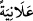
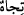
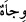
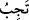
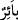
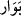

29. Allah’ın kitabını okuyanlar, namazı kılanlar ve kendilerine verdiğimiz rızıktan
(Allah için) gizli ve açık sarfedenler, asla zarara uğramayacak bir kazanç
umabilirler.
“Allah’ın kitabını okuyanlar” okumaya devam eden ve içindekilerle amel edenler, -
zira amelsiz okuma fayda vermez-...
Tilâvet, dirâset ve vazife bilinen virdler gibi peş peşe okumak demektir. Kırâat daha
geneldir. Yâni kırâat peş peşe de olur, ara ara da olur. Ancak hece hece okumak ve
çocuklara Kur’an tâlimi yapmak kırâat sayılmaz. Bundan dolayı fukaha, “cünüp kişi –
erkek olsun kadın olsun fark etmez- âdet halinde bulunan ve lohusa olan kadının
Kur’an’ı hece hece okuması mekruh değildir”, demişlerdir. Zira bu kişi kâri/okuyucu
sayılmaz. Aynı şekilde bu kimselerin çocuklara yahut başkalarına harf harf ve iki kelime
arasını keserek kelime kelime Kur’an öğretmeleri de mekruh değildir.
“Namazı” âdâbına ve şartlarına riâyet ederek “kılanlar ve kendilerine verdiğimiz
rızıktan (Allah için)” riyâya bulaşma korkusundan dolayı “gizli ve” başkalarının
tasadduk etmeye rağbetlerinin artması için “açık” ve âşikâr olarak iyilik ve hayır
yollarına “sarf edenler,” yâni yoksullar için ellerinde olanlardan verenler “asla zarara
uğramayacak bir kazanç” yâni itâatle sevap elde etmeyi “umabilirler.”
Burada Kur’an tilavetinde muzârî, namazın ikamesinde ise mazi kalıbı getirilmiştir.
Çünkü Kur’an’ın tilavet zamanları daha genel ve daha kapsamlı olup namaz vakitleri ise
böyle değildir. Onlar muayyen, muvakkat ve sınırlı zamanlardır. Yine “
” kavliyle
delâlet edilen zekât vakitleri de sınırlı zaman dilimleridir.
“
” kelimesi, sırrın zıddıdır. Bu kelime eşyâda değil, daha çok mânâlarda
kullanılır. Yâni “Nasıl tevâfuk ederse, kasıtsız olarak hem gizli hem de âşikâre olarak
infakta bulunurlar”, demektir. Kâşifî der ki “Riyâya bulaşma korkusundan dolayı
“gizlice”; başkalarının tasadduk etmeye rağbetlerinin artması için de âşikâr olarak infak
ederler.” İnfaktan gizli olan sünnet, âşikâre olan ise farz olandır. Bu kelimelerde ilm-i
bâtın ve ilm-i zâhire de işâret edilmektedir. Ayrıca burada infâk edecek olan kişi, her
zaman ve her hâlükârda Allah yolunda sadaka vermeye teşvik edilmektedir.
“Tâcir”; alış-veriş yapan, ticaretle meşgul olan kişidir. Ticâret kâr ve kazanç talep
ederek sermayede tasarruf etmektir. Denilir ki Arap kelâmında ticaret kelimesinden
başka “ ”den sonra “ ”in bulunduğu bir kelime yoktur. “
” kelimesinin aslı “
”tir.
“
” kelimesindeki “ ” ise muzâraat harfidir; kelimenin aslından değildir.
“
” kelimesi kesâd, kötülük ve bozulmanın aşırı derecede oluşunu ifâde eder. Bu
kelimenin sıfat hali, “ ”dir. Aşırı kesâd, fesada götürdüğünden mutlak helâkten “
”
diye söz edilmiştir. Arapların, “virajlı olsa da yola giriniz, belâlı olsa da bâkireyle
evleniniz, zulüm ve haksızlık olsa da şehirde iskân ediniz” sözündeki belâ/bevâr ise
mânevî helâk kabilindendir.
Mânâ şöyledir: Onların ticareti asla fesâd, kesâd, helâk ve hüsrâna uğramaz. Fâsid
olmaz ve ona ziyan erişmez. Belki kıyâmet gününde onların amellerinin metâı revaç